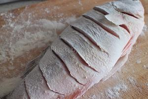

糖醋鱼
糖醋鱼酸酸甜甜口味好颜值高，在酒店一直深受食客喜爱。要是能学会这道菜，家庭聚餐、朋友聚会、年夜饭亮出来，一定会博得大家一致赞赏。
在家里制作存在两个技术难点：
1、鱼皮的定型。家里煎鱼通常不会像酒店那样一次倒一大锅油，但是油少又很难受热均匀。所以鱼皮要先抹薄薄一层干淀粉，下进油锅之后用勺子把油不断淋在鱼身接触不到油的地方，虽然麻烦但是基本可以达到整锅油的制作效果。
2、糖醋汁的配方：这是我自己搭配出的超级方便而且不会失败的糖醋汁。传统糖醋汁用番茄酱和糖、醋调汁，醋的比例掌握不好就会出现刺激的味道。泰式甜辣酱本身就是混合了甜、咸、酸、辣多种口味，加番茄酱和糖调成糖醋汁更增加了一些复合味，比传统糖醋汁更美味，色泽也更好看。
有了这两点技术保证，还怕做不出完美的糖醋鱼？
————//
有厨友反应鱼腥味较重，可以用姜丝和料酒把鱼身腌渍10分钟再进行后面的步骤。
————//
喜欢酥脆口感可以把鱼炸透，用汁直接淋上。按菜谱方法制作就是比较入味的方案，请随意。
用这个糖醋汁做的其他菜
糖醋藕圆 https://www.xiachufang.com/recipe/101767982/
糖醋里脊 https://www.xiachufang.com/recipe/101760986/
用料
| 主料 |
|---|
| 鲈鱼或者其他刺少的鱼 |
| 配料 |
| 干淀粉 |
| 调料 |
| 亨氏番茄酱 |
| 李锦记泰式甜辣酱 |
| 糖 |
| 盐 |
| 花生油 |
糖醋鱼（媲美饭店超简单高颜值）的做法
把鱼处理干净，用厨房纸巾吸干表面水分。
在鱼身上斜切花刀，尽量切深一点但是别切断了。
鱼身裹上淀粉，把鱼拎起来抖去多余的淀粉。只留薄薄一层就行，所以上一步鱼皮一定要擦干。

油烧热，油量比平时炒菜稍多一些。把鱼滑入油里中火炸至两面金黄。一定要等一面定型了再翻另一面，沾不到油的地方可以稍微倾斜炒锅，借助勺子把油往鱼身上淋。
两面都炸好放在厨房纸巾上吸油。
锅中只留一点底油，放入番茄酱、泰式甜辣酱和白糖翻炒。比例是2:2:1。
炒到冒泡（如图中状态）加一小碗水。
水煮开加适量盐调味，把鱼放进锅里大火继续煮。
用勺子把汁不断的浇在鱼身接触不到汤汁的地方，这样就不需要给鱼翻面防止破坏形状。汤汁快烧干的时候可以倾斜锅子。
汤汁收到黏稠关火。番茄酱甜辣酱还有白糖都有黏稠作用，所以不需要勾芡。